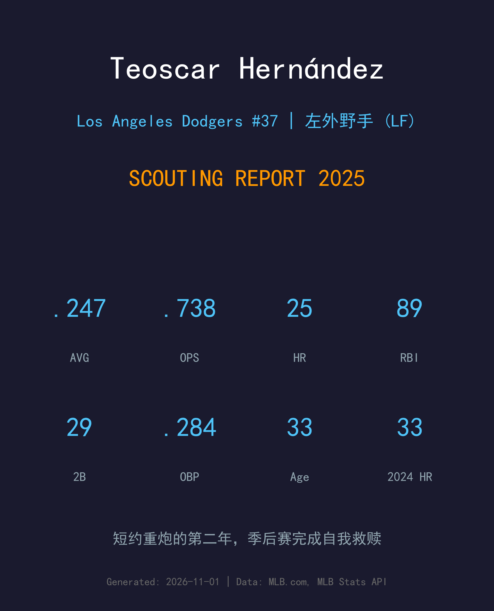
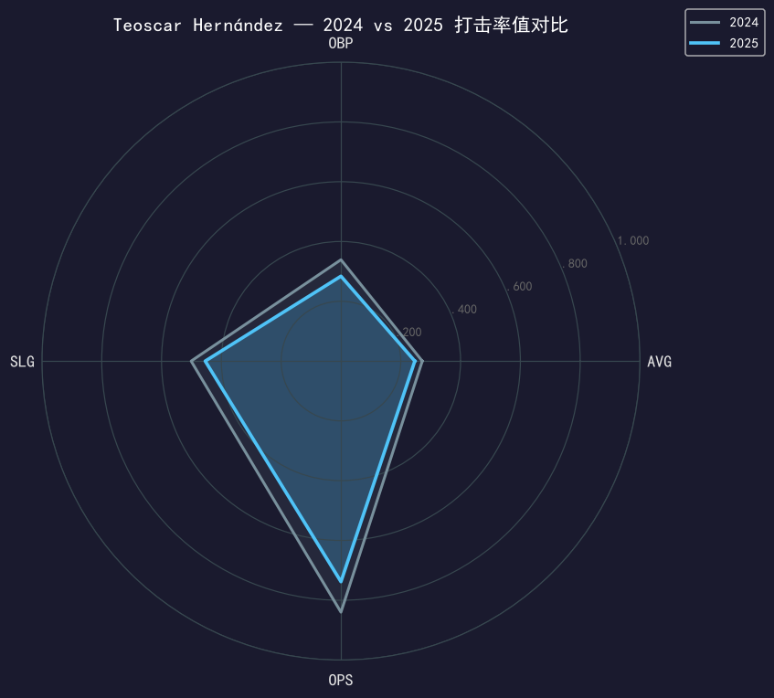
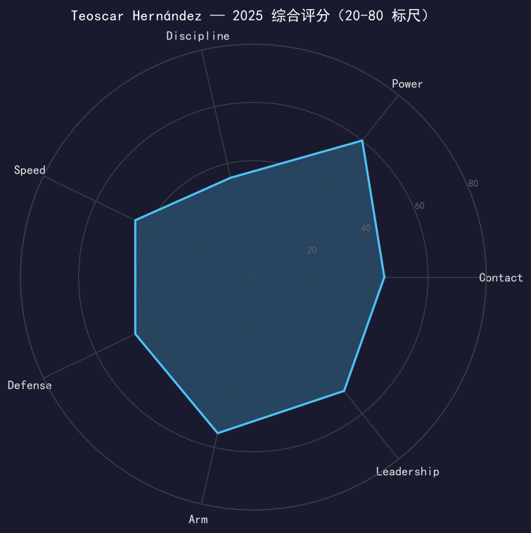

Los Angeles Dodgers #37 | 左外野手 | 右打 | 短约重炮 · "Mr. Seeds"

Teoscar Hernández 是道奇过去两个赛季最划算的签约之一——连续两份一年短约，换来的是2024 年 33 轰、2025 年 25 轰 89 分打点的左外野火力。
2025 年他开季火烫（前 33 场 .315/.333/.600、9 轰），5 月初左腹股沟拉伤进入伤病名单后节奏被打断，最终缴出 .247/.284/.454、OPS .738——较 2024 年的 .840 明显回落。下滑的主因不是力量（长打率仍有 .454），而是保送从 53 次腰斩到 26 次，上垒率跌到 .284。他的打法从来建立在「挥就对了」之上，当击球落点不如 2024 年听话时，数据就会如实反映。
季后赛他把常规赛的所有质疑都打了回去：17 场 5 轰 13 分打点、OPS 接近 .800，是道奇二连霸路上最重要的打线支柱之一。2025 是他第二份一年约的最后一年，休赛期的去留问题将再度摆上桌面。
以自由球员身份加盟道奇第一年即轰出 33 支全垒打、99 分打点，OPS .840，成为打线中段最可靠的右打长炮。
4 月 27 日对海盗轰出生涯第 200 支全垒打，两天后对马林鱼敲出生涯第 200 支二垒打，单场 4 安 4 打点助球队 15-2 大胜。
连续两年作为主力左外野手随道奇夺冠；2025 年季后赛 17 场 5 轰 13 打点，是冠军之路的关键火力。

| 赛季 | G | PA | AVG | OBP | SLG | OPS | HR | RBI | 2B | BB | SO | SB |
|---|---|---|---|---|---|---|---|---|---|---|---|---|
| 2024 | 154 | 652 | .272 | .339 | .501 | .840 | 33 | 99 | 32 | 53 | 188 | 12 |
| 2025 | 134 | 546 | .247 | .284 | .454 | .738 | 25 | 89 | 29 | 26 | 134 | 5 |
对比的每一栏都在往下走，但结构要拆开看：SLG 仍有 .454（ISO .207，重炮本色未失），真正的塌陷发生在上垒——保送腰斩、AVG 回落，OBP 从 .339 掉到 .284。5 月的腹股沟拉伤让他缺席约一个月，复出后没有再找回开季前 33 场 .933 OPS 的状态。89 分打点放在伤停过一个月的赛季里，产量效率其实被低估了。
Teoscar 的挥棒是全联盟最「无畏」的那一档：出手幅度大、不怕坏球、对快速球的惩罚能力顶级。2025 年他的击球初速和长打能力没有退化——29 支二垒打队内第二、25 轰队内第三就是证明。他的问题是当挥棒 misses 时没有任何安全网：保送率 4.8%，意味着投手可以肆无忌惮地利用他的 chase 倾向。
开季 33 场 .315/.333/.600 的他原本是联盟最烫的打者之一；5 月 6 日左腹股沟拉伤进 IL 是赛季转折点。复出后他的下盘发力和击球节奏都打折，后半季率值再未回到开季水准。33 岁的身体对这类软组织伤病的恢复速度，是评估他剩余价值的重要变量。
左外野守备中规中矩：臂力足够、路线判断合格，但不是守备型外野。他的价值 90% 来自棒子——对道奇这样打线深度联盟第一的球队，他的功能是把中心棒次身后的火力缺口填上。89 分打点证明了这一点仍然成立。
这是一个「先扬后抑再反弹」的赛季：开季 MVP 级热度 → 腹股沟伤退 → 回归后平庸的夏天 → 季后赛王者归来。常规赛数据（.738 OPS）配不上他的实际贡献——13 分打点的季后赛产出是道奇夺冠的核心拼图之一。

季后赛证明过自己的短约重炮，年龄曲线进入下行段
B 级 / 主力级左外野重炮
道奇 2025 季后赛之路：外卡轮 2-0 红人 → NLDS 3-1 费城人 → NLCS 4-0 酿酒人 → 世界大赛 4-3 多伦多蓝鸟（二连霸）。
| G | PA | AVG | OBP | SLG | OPS | HR | RBI | BB | SO |
|---|---|---|---|---|---|---|---|---|---|
| 17 | 76 | .257 | .307 | .486 | .792 | 5 | 13 | 5 | 21 |
Teoscar Hernández 将在 2026 赛季年满 34 岁，并且连续第二年进入自由球员市场。2025 年的数据形状（力量未衰、上塌陷、伤病插曲）对续约谈判既是加分项也是减分项——球队买到的是一条仍有余量的重炮棒，但也要为年龄和伤病史打折。对他而言，留在道奇这样的深度打线里继续「只做自己擅长的事」或许是生涯寿命最长的选择。
短期：无论去哪，25 轰级别的年度产量仍可期待一到两年
中期：打击模式决定他的衰退会比平均更快，合同年限宜短不宜长
角色：左外野主力或强队 DH 轮换，季后赛经验是溢价来源
Teoscar Hernández 出生于多米尼加共和国的科图伊，2011 年 2 月被休斯顿太空人以国际自由球员身份签下，开启了职业棒球之路。2016 年 8 月 12 日，他在多伦多蓝鸟完成大联盟首秀，随后在蓝鸟效力六个多赛季，逐渐成为美联最令人忌惮的拉打型重炮之一。
2022 年 11 月他被交易到西雅图水手，一年后以自由球员身份与道奇签约——这笔签约被证明是道奇近年性价比最高的操作之一：2024 年 33 轰 99 打点、2025 年再夺世界大赛冠军。他的绰号 "Mr. Seeds" 来自他对自己击球习惯的自嘲式描述，这个绰号如今在多明尼加球迷中比他本名还响。
场下的 Teoscar 与妻子 Jessica 育有三个儿子，是道奇阵容里最顾家的球员之一。从太空人农场的小联盟球员到世界冠军主力，他的路线是多明尼加棒球梦的标准范本。